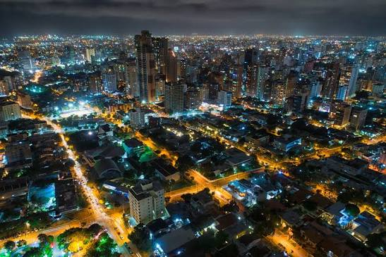

OVNIS sobre Barranquilla
Ovnis / Fenómenos aéreos no identificados

El misterio en el cielo
Barranquilla, conocida como la Puerta de Oro de Colombia, también ha sido escenario de acontecimientos que despiertan la curiosidad de sus habitantes. A lo largo de los años, diferentes personas han reportado luces extrañas, destellos y objetos aparentemente desconocidos que llaman la atención al observar el cielo de la ciudad.
Uno de los episodios más comentados ocurrió en febrero de 2018, cuando una extraña luz fue observada sobre el centro de Barranquilla, cerca de la Catedral María Reina y el edificio Nelmar. Varias personas se reunieron para observar un punto luminoso que parecía cambiar de colores y permanecer suspendido en el cielo.
El fenómeno generó diferentes interpretaciones. Algunos ciudadanos hablaron de un dron, un helicóptero o incluso una posible nave extraterrestre. Sin embargo, especialistas consultados por medios de comunicación plantearon que podría tratarse de un efecto óptico conocido como destello del lente, producido por la luz al atravesar una cámara.
Otro episodio ocurrió en mayo de 2023, cuando una intensa luz atravesó el cielo de Barranquilla y fue registrada mediante teléfonos celulares. Las imágenes circularon rápidamente por las redes sociales y despertaron especulaciones sobre una posible nave, un meteorito o algún otro fenómeno espacial.
En febrero de 2024, nuevamente aparecieron luces misteriosas sobre Barranquilla y otros municipios del Atlántico. Numerosos ciudadanos compartieron videos de varios puntos luminosos que avanzaban por el cielo en formación, generando preguntas sobre su procedencia.
La explicación llegó posteriormente: se trataba de un conjunto de satélites Starlink y elementos relacionados con el lanzamiento de un cohete Falcon 9 desde Florida, Estados Unidos. El fenómeno permitió comprobar cómo algunos acontecimientos tecnológicos y astronómicos pueden confundirse inicialmente con avistamientos OVNI.
Aunque estos episodios cuentan con explicaciones diferentes, mantienen vivo el interés por los fenómenos aéreos no identificados. La inmensidad del cielo, los testimonios ciudadanos y las imágenes compartidas siguen alimentando preguntas sobre aquello que todavía no comprendemos completamente del universo.
Avistamientos documentados
2018 – Una luz misteriosa sobre el centro de Barranquilla. Ciudadanos observaron un punto luminoso que parecía cambiar de colores cerca de la Catedral María Reina.
2023 – Un destello atravesó el cielo de la ciudad y fue registrado en video por varios ciudadanos.
2024 – Un tren de luces sorprendió a habitantes de Barranquilla y municipios del Atlántico. Posteriormente, el fenómeno fue relacionado con satélites Starlink.
Fuentes de consulta
El Heraldo. (2018). Las posibles explicaciones a la inquietante luz en el cielo que sorprendió a varios barranquilleros.
Consultar fuenteEl Universal. (2023). Rara luz brillante en el cielo de Barranquilla, ¿ovni o meteorito?
Consultar fuenteNoticias Caracol. (2024). ¿Eran ovnis? Extrañas luces se vieron en Antioquia, Atlántico y otros departamentos.
Consultar fuenteEl Heraldo. (2024). EH verifica: ¿se vieron ovnis en el Atlántico y otros departamentos?
Consultar fuente